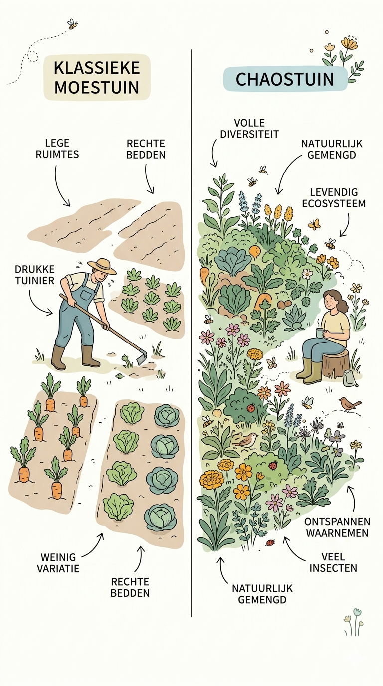

➡️ Wat betekent “meer”?
🌿 Meer opbrengst
Planten staan dichter bij elkaar en worden beter gecombineerd.
De tuin levert meer voedsel op dezelfde ruimte.
🥕 Meer soorten
Niet één soort per vak, maar veel soorten door elkaar.
Dat maakt je tuin rijker en veerkrachtiger.
🧘 Meer rust (minder werk)
Minder spitten, minder harken, minder ingrijpen.
De tuin doet meer zelf, jij doet minder maar slimmer.
🌸 Meer leven
Meer bloemen, meer insecten, meer vogels.
Je tuin wordt een klein ecosysteem in plaats van een productievlak.
🌿 Meer schoonheid
Geen strak veld, maar een levend landschap.
Een tuin die eruitziet als een klein natuurgebied.
🔍 Meer ontdekking
Je ziet wat werkt en wat niet.
Elk seizoen wordt een experiment.
🎲 Meer verrassing
Combinaties geven onverwachte resultaten.
Dat maakt tuinieren spannender en dynamischer.
🎲 Meer CO2 in de bodem
Meer mulch => meer organische stof => meer CO2 in de bodem, betekent minder in de lucht.
Je helpt dus het CO2 probleem oplossen.
“Meer uit je tuin” ontstaat door:
- 🌱 bodem opbouwen
- 🌿 diversiteit verhogen
- 🚶 paden respecteren
- 🧩 slim indelen
- ⚖️ leren bijsturen